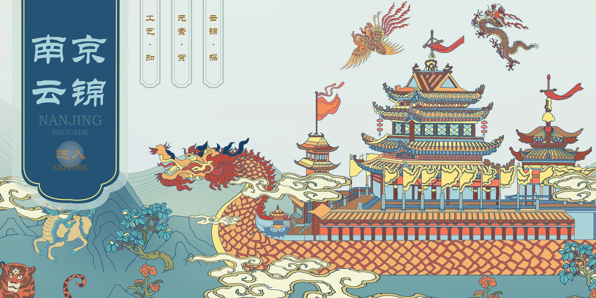
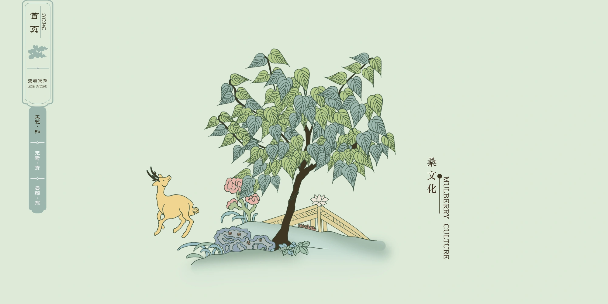
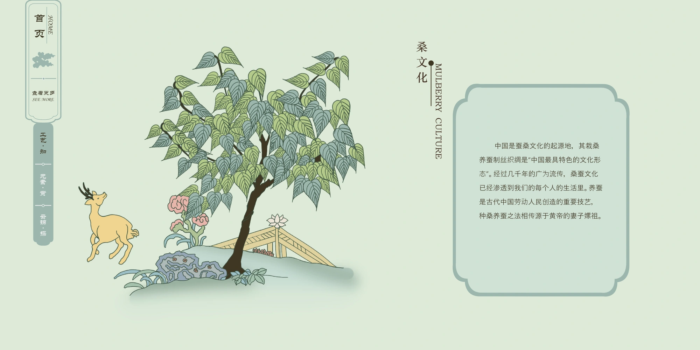
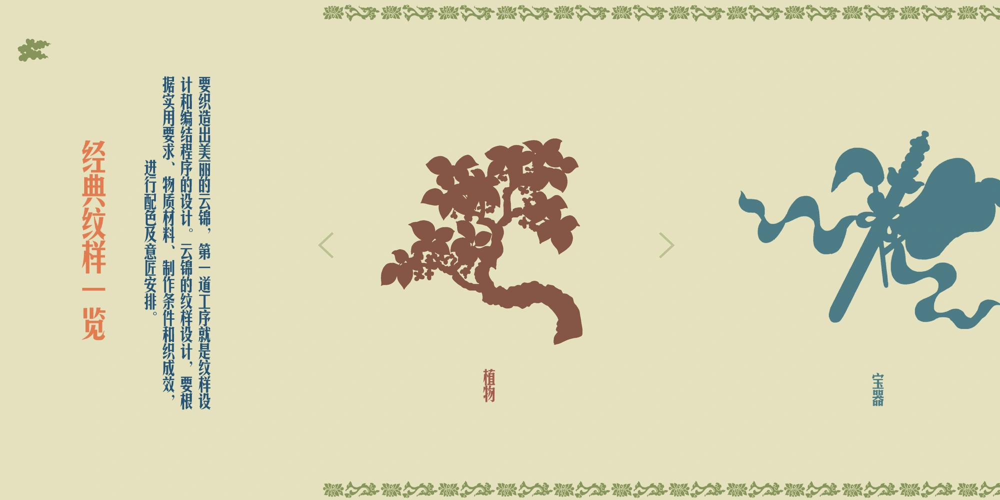
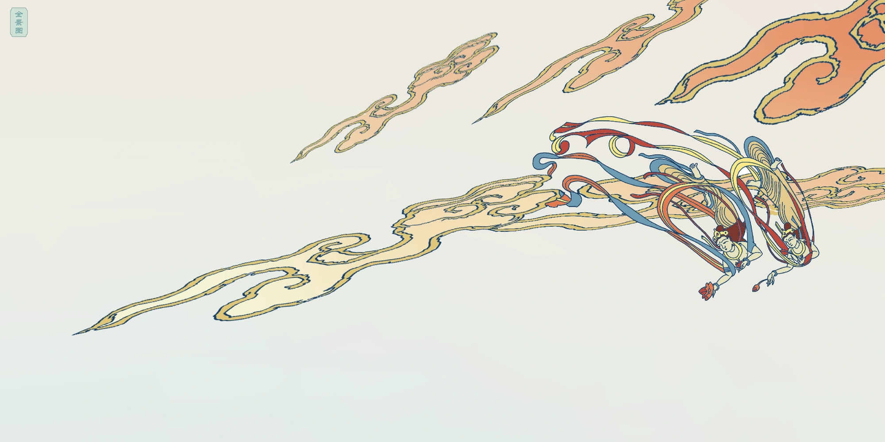
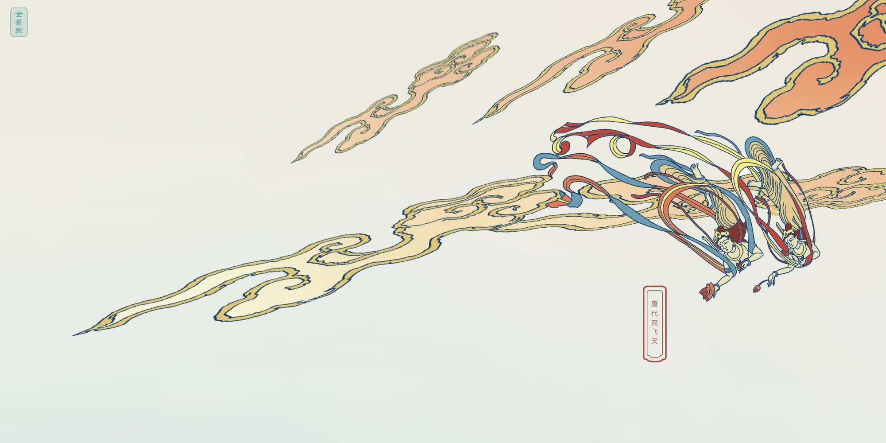
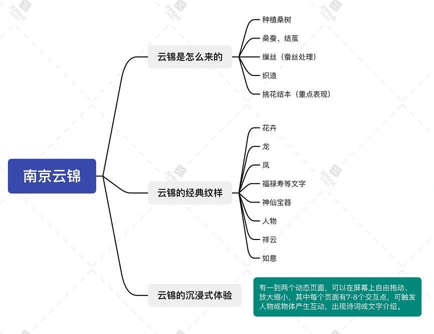
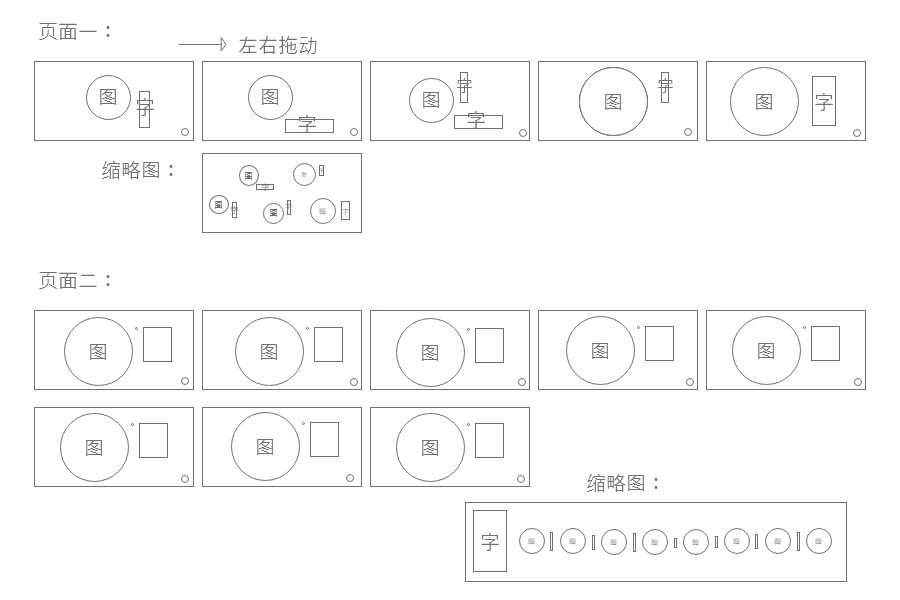
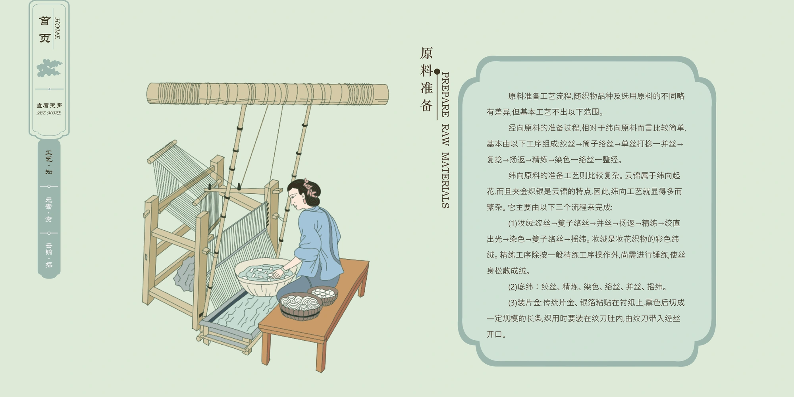
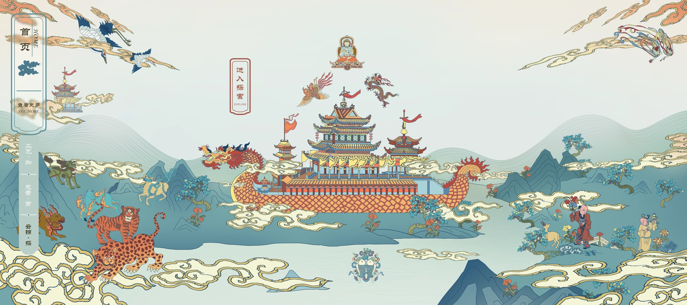

Collaborative exhibition interface prototype
Harmony with Nature
An illustrated guide to Nanjing Yunjin brocade.

A wide-screen exhibition prototype for exploring silk production, brocade motifs and an illustrated landscape. Selecting an image opens a closer view or explanation.
Materials, motifs and an illustrated world
The content structure gives visitors three related routes: the weaving process, the pattern vocabulary, and a composed world of symbolic imagery.
Materials, tools and the weaving sequence.
Individual motifs presented for horizontal browsing.
A panoramic scene with places and figures to inspect.




Text summary: The panel introduces mulberry cultivation, silkworm rearing and silk production in China. It also recounts the traditional story of Leizu.
Browse and inspect the motifs
The motif browser separates the patterns into silhouettes. In the panoramic scene, visitors can select individual elements for a closer view.






The prototype walkthrough
The recording moves from the making process to the horizontal motif browser and then into the illustrated landscape. It shows the original interface transitions and detail views.
Information architecture and wireframes
Background reading informed the content map. Wireframes then set out the sequence and position of the illustrations, text and controls.






Text summary: The heading means “Raw material preparation”. The text distinguishes warp and weft preparation and describes twisting, refining and dyeing thread, including the use of gold and silver strips.


What to test at exhibition scale
The next step is to check whether visitors can find the three routes from a distance, read the text and use the controls on a large screen.
Team project by 龚珈萱 and 顾小漩. The page shows the team’s Adobe XD prototype, illustrations and process documents. It was designed for an exhibition screen; a museum deployment is not documented.